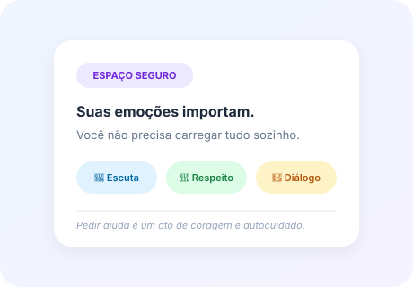
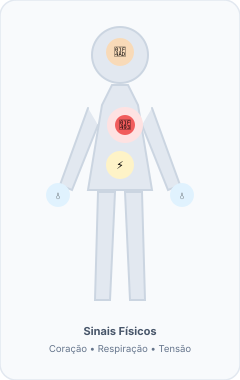

A escola faz parte de uma grande parte da nossa vida. Aqui você pode entender melhor algumas situações, conhecer maneiras de comunicar o que precisa e descobrir onde procurar apoio.

Não existe resposta certa. Escolha a opção que mais se aproxima do que você está sentindo neste momento.
Algumas emoções são agradáveis e outras são desconfortáveis, mas sentir tristeza, medo, preocupação, irritação ou frustração faz parte da experiência humana. O mais importante é perceber como estamos nos sentindo e quando precisamos de apoio.
Algo importante ou agradável aconteceu.
Existe alguma situação ocupando bastante os seus pensamentos.
Algo pode ter machucado, mudado ou sido perdido.
Algo pode estar incomodando ou ultrapassando seus limites.
Seu corpo percebe alguma situação como ameaçadora.
Muitas demandas ou estímulos podem estar acontecendo ao mesmo tempo.
Uma emoção sozinha não define sua saúde mental.

Essas sensações podem acontecer por vários motivos. Observe o contexto e converse com alguém quando elas estiverem causando sofrimento ou dificultando seu cotidiano.
Às vezes pequenas dificuldades vão se acumulando até parecer que não conseguimos lidar com mais nada.
O que está pesando mais agora?
Não há diagnóstico aqui – apenas um ponto de partida para refletir.
Essas estratégias não substituem ajuda profissional quando existe sofrimento persistente ou intenso.
PENSAMENTO: "Todo mundo entendeu menos eu."
REFORMULAR: "Talvez eu precise que expliquem de outra maneira."
Precisar de outra explicação não significa incapacidade.
Situação: "Tenho muita dificuldade para apresentar trabalhos."
Precisar de outra explicação não significa incapacidade.